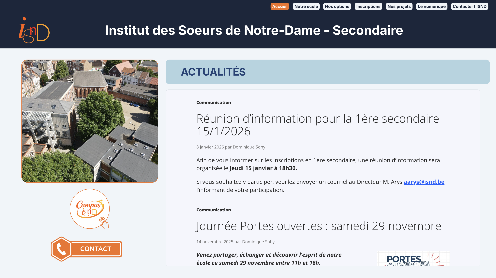
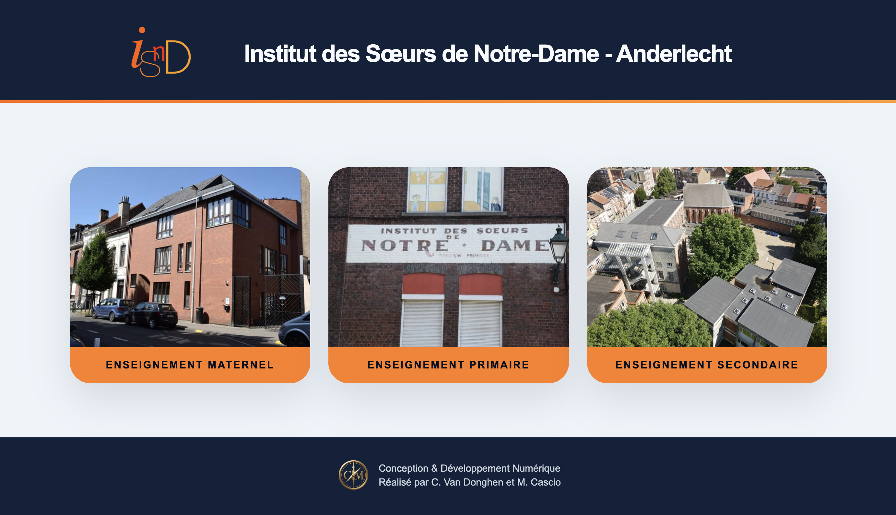
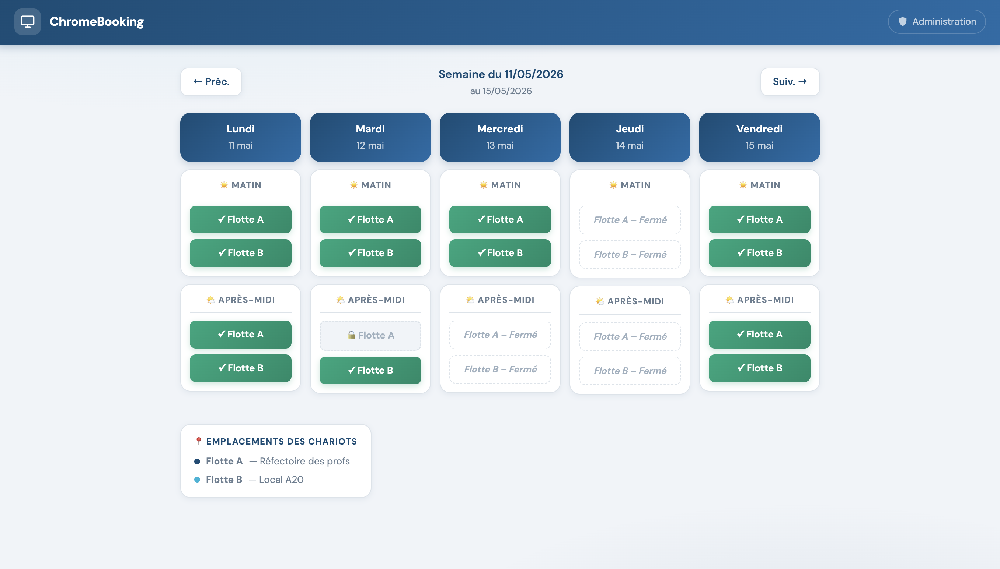
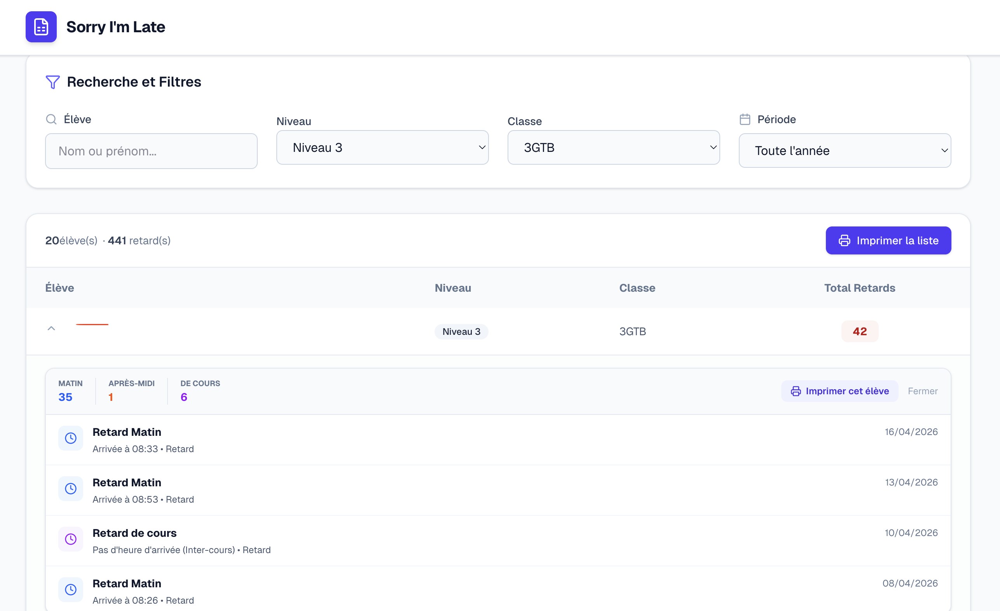
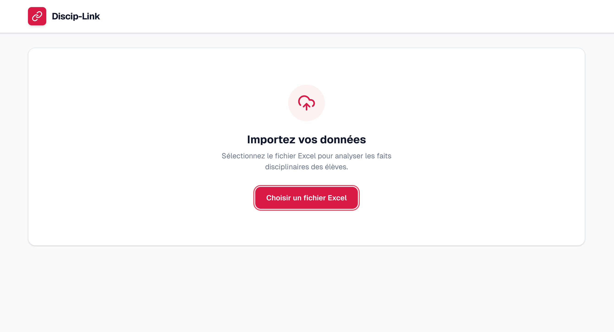
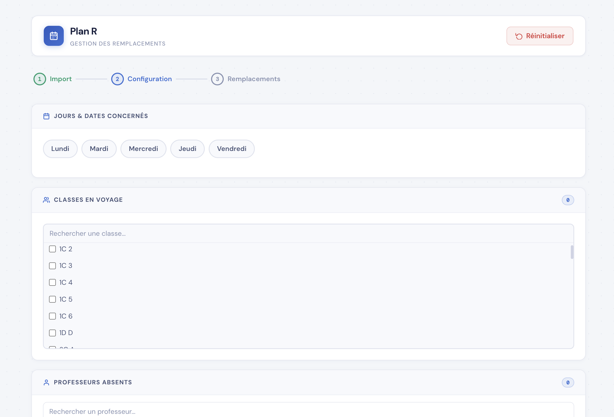
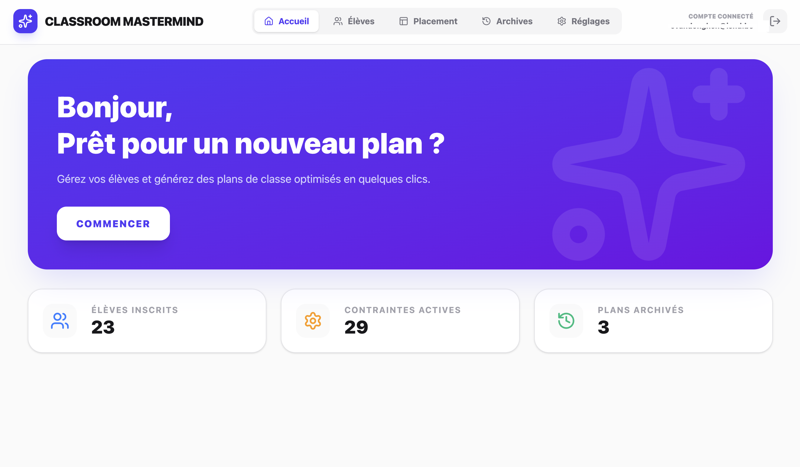

Web Design & Architecture
Site Internet de l'ISND Secondaire
Refonte intégrale du site web de notre établissement secondaire. Réaliser entièrement sur Canva Site.
Visiter le siteSolutions sur mesure, de l'éducation au développement d'applications métiers.

Refonte intégrale du site web de notre établissement secondaire. Réaliser entièrement sur Canva Site.
Visiter le site
Réalisation de la page d'accueil du site web de l'ISND.
Visiter le site
Plateforme de réservation centralisée pour le parc informatique mobile. Ce programme fluidifie la coordination entre collègues en offrant une visibilité en temps réel sur la disponibilité des flottes de Chromebooks.

Solution d'analyse automatisée de l'assiduité. Le programme transforme les fichiers Excel bruts en tableaux de bord intelligents, permettant aux éducateurs de détecter instantanément les profils de retards récurrents et d'agir de manière ciblée.
Visiter le site
Outil de monitoring disciplinaire de haute précision. En corrélant des milliers de faits importés, le système génère des analyses multidimensionnelles (par élève, classe ou période) pour une vision globale du climat scolaire.

Système de planification automatisée des remplacements. Conçu pour soulager l'organisation lors des sorties scolaires, ce programme calcule instantanément la meilleure répartition des forces vives pour garantir la continuité pédagogique.

Générateur intelligent d'environnements d'apprentissage. Grâce à un algorithme prenant en compte des contraintes complexes (bavardages, besoins physiologiques, affinités), l'outil crée le plan de classe optimal.